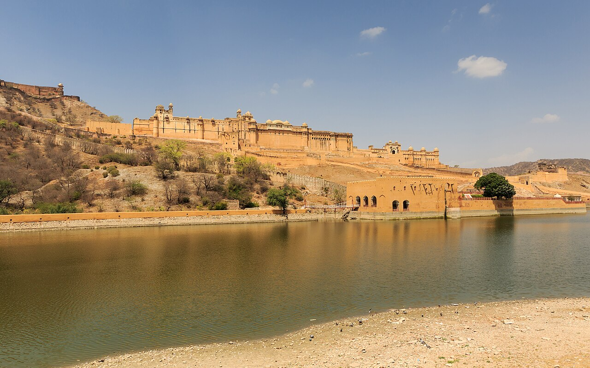
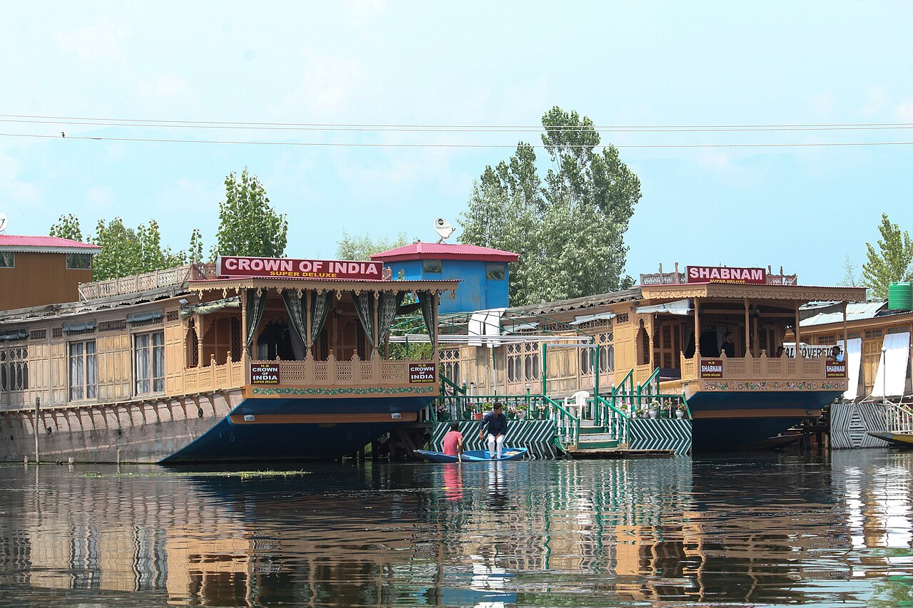
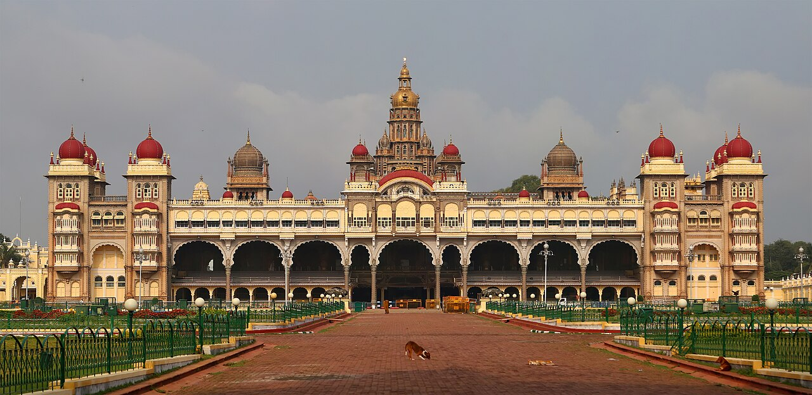
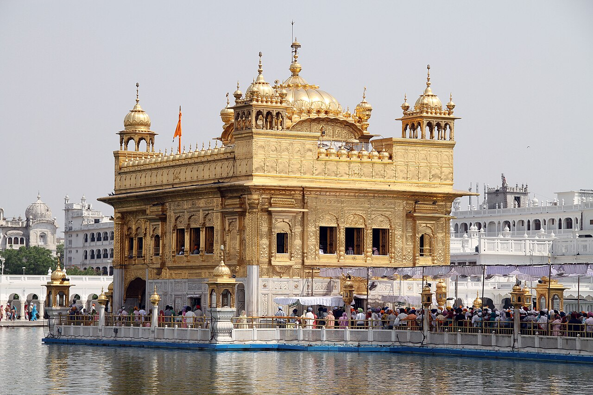

Explore India's Famous Destinations
Taj Mahal - Agra
Built by Emperor Shah Jahan in the 17th century, the Taj Mahal is a magnificent Mughal monument created as a mausoleum for Mumtaz Mahal. It stands beside the Yamuna River in Agra, Uttar Pradesh.
Its white marble, symmetrical gardens, central dome and detailed inlay work make it one of the finest examples of Mughal architecture.
- Location: Agra, Uttar Pradesh.
- Best time: October to March.
- Tourism importance: UNESCO World Heritage Site.
Red Fort - Delhi
Shah Jahan built the Red Fort in 1648. It served as the main residence of Mughal emperors for nearly 200 years and is an important symbol of India's history.
The fort combines Persian, Indian and European architectural styles. Its massive gates, audience halls and gardens attract millions of visitors.
- Prime Minister's Independence Day address
- UNESCO World Heritage monument
- Located in Old Delhi
India Gate - New Delhi
India Gate is a 42-metre war memorial at the center of New Delhi, dedicated to soldiers who died in the First World War and later conflicts. Its surrounding lawns are a popular public meeting place.
Jaipur - Rajasthan
Jaipur, the Pink City, is known for royal palaces, markets and colorful Rajasthani culture.

Hawa Mahal
The Palace of Winds has hundreds of small windows that allow cool air to enter.

Amber Fort
This hilltop fort combines Rajput architecture, courtyards and scenic views.
Kerala
Kerala's backwaters are a network of lakes, canals and lagoons along the Arabian Sea coast. Traditional houseboats offer a relaxed way to experience village life and natural scenery.
- Alleppey and Kumarakom backwaters
- Houseboat cruises and birdlife
- Tropical forests and beaches

Goa

Goa is famous for beaches, Portuguese-era churches and lively cultural traditions. Popular activities include swimming, surfing, water sports and heritage walks.
The state's cuisine blends Konkani and Portuguese influences, and its festivals attract visitors throughout the year.
Kashmir
Kashmir is celebrated for snowy mountains, valleys, gardens and rivers. Dal Lake is especially famous for wooden shikaras and houseboats.

Varanasi
Varanasi is one of the world's oldest continuously inhabited cities. Its ghats along the Ganga are used for worship, ceremonies and daily life. The city has deep significance in Indian religion and learning.
Mysore
Mysore Palace is a royal landmark known for Indo-Saracenic architecture and elegant interiors. Mysore also celebrates Dasara with processions, music and illuminated streets.

Golden Temple
The Harmandir Sahib in Amritsar is the holiest shrine of Sikhism. Its golden exterior surrounds a sacred pool, and the community kitchen serves free meals to visitors.
